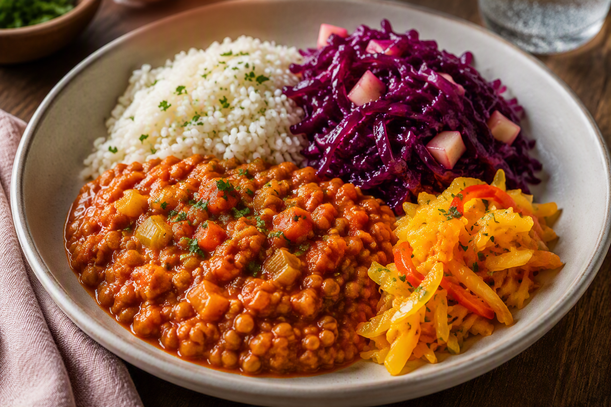

Dinsdag · vegetarisch
Chipotle-linzen met andijvie, prei, rode kool en atjar
Een vegetarisch hoofdgerecht voor drie personen met rokerige rode splitlinzen, rijst, een volledige krop andijvie, verse prei, rode kool met appelmoes en atjar tjampoer.

Ingrediënten
- 200 g rode splitlinzen
- 225 g rijst
- 360 g diepvriesrode kool
- 1 krop andijvie, gewassen en grof gesneden
- 1 verse prei, gewassen en in dunne halve ringen
- 1 ui, fijngesneden
- 1 teen knoflook, fijngehakt
- 1 tot 2 tl La Morena diced chipotle pepper, naar smaak
- 300 ml water, plus eventueel extra
- 100 g appelmoes
- 150 g atjar tjampoer, uitgelekt
- 1 el olie
- 1 tl gemalen komijn
- Peper naar smaak
Bereiding
- Stap 1
Kook de rijst volgens de aanwijzingen op de verpakking. - Stap 2
Verhit de olie in een ruime pan. Fruit de ui en knoflook ongeveer 2 minuten. Voeg de komijn en chipotle toe en bak 30 seconden mee. - Stap 3
Spoel de rode splitlinzen. Voeg de linzen met 300 ml water toe. Laat 15 tot 20 minuten zacht koken tot een dikke stoof ontstaat. Roer regelmatig en voeg zo nodig een scheut water toe. - Stap 4
Verhit ondertussen een tweede ruime pan. Bak de prei ongeveer 5 minuten op middelhoog vuur, totdat de prei zachter wordt maar nog enige structuur heeft. - Stap 5
Voeg de bevroren rode kool aan de prei toe en verwarm 8 tot 10 minuten. Roer regelmatig. - Stap 6
Roer de appelmoes door het prei-rodekoolmengsel. Voeg daarna de andijvie in delen toe en laat deze 2 tot 3 minuten slinken. De andijvie mag nog frisgroen zijn en enige structuur behouden. - Stap 7
Breng de linzenstoof op smaak met peper. Verdeel de rijst, chipotle-linzen en het warme mengsel van rode kool, prei en andijvie over de borden. Serveer de atjar tjampoer erbij.
In dit gerecht worden de volledige krop andijvie en de verse prei verwerkt. Voeg de andijvie als laatste toe, zodat de groente niet papperig wordt.